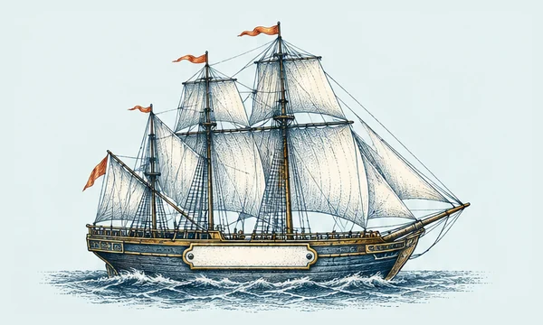
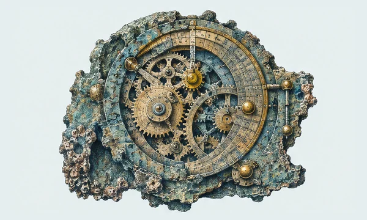
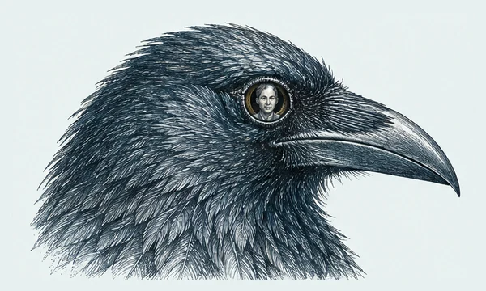
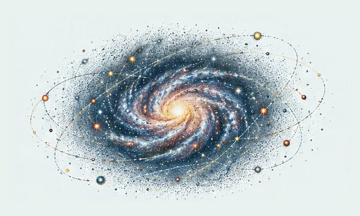

The collection index
Follow a thread.
Six collections, each a different way of looking. There is no right place to begin.

10 illustrated discoveries
The Thinking Room
A quiet place for the questions that change how we see ourselves.

10 illustrated discoveries
Between the Lines
Books, their makers, and the stories hiding in the margins.

10 illustrated discoveries
The Curious Past
Small windows into the extraordinary lives of other times.

10 illustrated discoveries
Nature’s Secrets
The intricate, improbable wonders of our living world.

10 illustrated discoveries
Beyond the Obvious
Follow an ordinary idea until it becomes extraordinary.

10 illustrated discoveries
The Unanswered
At the edge of what we know, there is room to wonder.